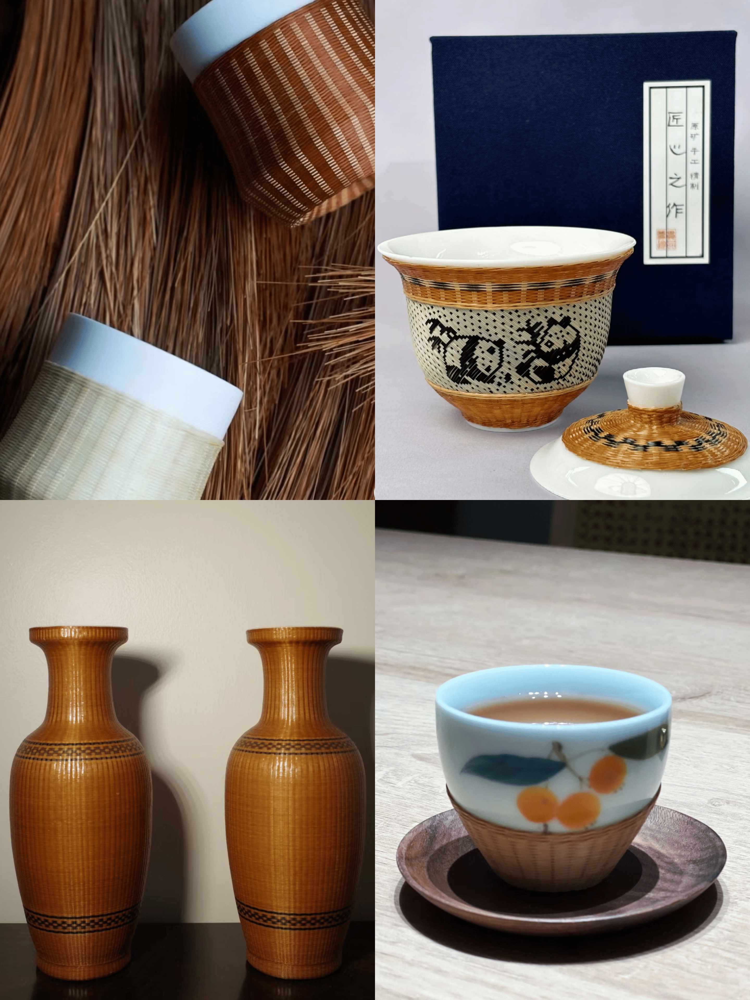

瓷胎竹编，韵雅艺臻
|  |
瓷胎竹编瓷胎竹编，仿若穿越千年时光的艺术精灵，静立在传统工艺的璀璨殿堂。 其制作从精选幼嫩竹材起始，历经刮青、破节、抽丝等数十道精细工序，方能获取如丝般细腻柔韧的竹丝。编织时，艺人凭借巧思与精湛技艺，依凭瓷胎之形，将竹丝细密编排。竹丝或纵横交错成规整图案，或蜿蜒环绕出花鸟鱼虫的鲜活模样，瓷的莹润与竹的清幽相互交融，刚柔并济间尽显独特韵味与卓绝匠心。这不仅仅是一件工艺品，更是中华传统文化的生动载体。它承载着先辈的智慧与情怀，在岁月长河中熠熠生辉。 拥有瓷胎竹编，便是握住了一段历史，让这份凝聚匠心的艺术瑰宝，为您的生活添彩，为文化传承助力，使其在现代社会中延续不朽的魅力传奇。 |